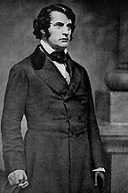

|

|

|
|
|
Lawyer, reformer and senator, Charles Sumner was a
Massachusetts man by birth and a Puritan by ancestry. Sumner
was born in Boston on January 6, 1811 the son of Charles
Pinckney and Relief Jacobs Sumner. He received his early
education at the prestigious Boston Latin School. A
brilliant student, Sumner graduated from Harvard College in
1830 and entered Harvard Law School in September 1831. He
started practicing law in January 1834, and was admitted to
the Massachusetts Bar in September of that same year. From
1835 to 1837, he taught law at Harvard.
Sumner left Boston in 1837 to travel to Europe, where he
intended to research the legal systems of England and
France. His two and a half years abroad provided a
foundation for his later contributions in foreign policy in
the United States Senate. Sumner, a life long bachelor,
except for a brief marriage in old age, was an admitted
Anglophile and particularly enjoyed his time in London. He
conquered the London social scene, and gained access to the
highest circles within a short period of time. While he
also traveled to France, Italy, Germany, and Austria, the
period in England reinforced his belief in the necessity of
a strong alliance between the United States and Great
Britain.
Upon his return to America in 1840, Sumner resumed his
legal practice, albeit somewhat reluctantly. He preferred
to pursue his growing interest in reform movements. The
young lawyer had become very active in promoting the peace
movement, penal reform and abolitionism. His reform fervor
drove him to abandon the law. Conservative Bostonians were
horrified by his radical positions, and as a result Sumner
was not invited to rejoin the Harvard Law school faculty.
Sumner's public antislavery stance became well known in
1845, during the nationwide debate over the annexation of
Texas. He spoke at a meeting in Boston's Faneuil Hall, and
stood with other prominent Massachusetts leaders in opposing
the admission of another slave state to the Union. Over the
next several years, Sumner became a voice of the "Conscience
Whigs" in his home state and initiated a feud with his
former Harvard classmate and current senator Robert C.
Winthrop. Sumner denounced Winthrop's vote for the Mexican
War Bill in Congress, and in doing so became even more
involved in politics.
In 1848 Sumner supported the Free Soil Party and ran on
that party's ticket for Congress. Although he failed to win
the seat, his tireless efforts to create a viable Free Soil
- Democratic coalition in the Massachusetts legislature did
not go unappreciated. When Daniel Webster left his Senate
seat to assume the position of Secretary of State, that same
coalition, after a fierce struggle with the Whigs, elected
Sumner to the vacant post in April 1851.
Over the next two and a half decades, Sumner established
himself as a recognizable force in the halls of Congress.
Incorruptible, always outspoken and often disagreeable, he
prided himself on his lofty principles. Sumner was a tall
and imposing person, with a handsome and distinguished
profile. Notably lacking a sense of humor, his speeches were
learned and sprinkled with many classical allusions. He
deserved his reputation as a great if overbearing orator.
Yet, Sumner possessed a moral passion that for many, helped
to define slavery's evil influence. Few of his senate
colleagues found fault with his steadfast commitment to his
senatorial duties. Over the course of four terms he worked
tirelessly for the causes of abolition and the equality and
protection of freedmen.
When he entered the Senate, Sumner found an assembly
still recovering from the yearlong struggle over the
Compromise of 1850. With emotions still raw, Sumner created
a sensation with his first major speech entitled, "Freedom
National, Slavery Sectional." Sumner argued against slavery
in general and called for the repeal of the Fugitive Slave
Act (part of the Compromise). His four-hour effort described
the FSA as being particularly offensive to northern freedom
loving sensibilities. Sumner declared because the
Constitution did not recognize slavery, it could not exist
where the national government maintained exclusive
jurisdiction, as in the territories.
Sumner's speech raised him into the top ranks of
antislavery politicians. Shortly thereafter, Sumner took
another stand against slavery when Stephen Douglas
introduced the Kansas-Nebraska Bill in 1854, which Sumner
and many of his colleagues declared outrageous. The heated
debates over the organization of the territories and the
validity of popular sovereignty did not prevent the passage
of the bill. Sectional tensions grew worse in the years that
followed as Kansas turned into a battleground. Now a
Republican, Sumner found the reports of fraudulent
governments and vigilante violence alarming, and prepared to
deliver a speech denouncing what he referred to as "The
Crimes Against Kansas." Over two days in May 1856, Sumner
lashed out at the activities in Kansas, attacked the
national government that allowed it to occur, and most
important, several of his southern colleagues who supported
this expansion of slavery.
All of his personal attacks were fierce, but his
commentary directed at Andrew Butler, a senator from South
Carolina was particularly virulent. Preston Brooks, a
congressman from that same state and a relative of Butler,
felt it his duty to avenge this personal insult. On May 22,
he entered the Senate, and finding Sumner at his desk, began
hitting him repeatedly with a cane until it broke into
pieces. Rendered defenseless by surprise and the confines
of his desk, a weakened Sumner warded off the blows.
Finally, he managed to wrench the desk from its moorings and
staggered away. Although some of his colleagues rushed to
his aid, many others, including Stephen Douglas, declined to
enter the fray.
Brooks' caning made Sumner a martyr in the North, but
turned Brooks into a hero in the South. The shocking and
violent act also became an electrifying issue in the
political campaign in the fall of 1856. It was one more
event that increased the hostility between North and South.
Although reelected to the Senate in 1857, Sumner suffered
severe physical and psychological wounds that affected him
for the remainder of his life. His initial recovery proved
fleeting. Sumner was unable to resume his duties in the
Senate until three years had passed. He spent much of this
time in Europe, where he tried various remedies to recover
his health.
Sumner returned to the Senate in December 1859, and by
summer 1860 was once again a fierce critic of the "Slave
Power." In the months that followed secession Sumner did not
favor any compromise measures. Sumner developed a close
friendship with Mary and Abraham Lincoln that allowed him
unusual access to the White House, even when he opposed the
president's policies. When the war began Sumner and his
fellow Radical Republicans strongly encouraged Lincoln to
emancipate the slaves. Indeed, Sumner in the Senate, and
Thaddeus Stevens in the House prodded and pushed President
Lincoln toward enacting laws that would bring freedom and
guaranteed equal rights to all African Americans.
The Massachusetts Senator also served the President in
another important capacity. Sumner had been selected to
chair the important Committee on Foreign Relations, a post
he would hold for the next twelve years. In this capacity
he used his European contacts and command of international
law to excellent effect. He was an invaluable asset as a
foreign policy advisor to Lincoln particularly in moderating
the more strident rhetoric of Secretary of State William
Seward. For example, he played a large role in settling the
Trent affair, which kept the peace with England. Sumner
worked hard and successfully to keep Great Britain neutral
in the war. Afterwards, Seward took a harder stance toward
his beloved England. In 1869 he advocated that Britain
should repay the United States for war related costs having
to do with the Alabama claims.
During and after the war, Sumner continued to press for
the most advanced positions on race and the promotion of
racial equality. In truth, Sumner was not the most effective
leader for the cause of the freed people. Unwilling to
compromise for the sake of principle, he often antagonized
and offended his colleagues. He also became one of the
strongest proponents of a hard reconstruction policy. Sumner
argued that the Southern states committed "suicide" and thus
Congress, and not the President, should determine the
process under which reconstruction should proceed.
Following the Civil War reconstruction and foreign
affairs dominated Sumner's political career. He became a
bitter enemy against Andrew Johnson's lenient policies
toward the South, and fully supported the efforts to impeach
Johnson in 1868. Unlike many other Radical Republicans,
Seward opposed the passage of the 13th, 14th, and 15th
amendments, claiming that they did not go far enough to aid
the ex-slave population. After his death, the Civil Rights
Bill of 1875 provided his main legislative legacy to the
country.
Reelected for a fourth term in 1869, Sumner found it hard
to work with the sitting president, Ulysses S. Grant.
Grant's failure to appoint him secretary of state infuriated
Sumner, and made him a thorn in the administration's side.
Sumner retained his position as chairman of the Committee on
Foreign Relations during Grant's first term, but his noisy
opposition to the President's ill fated plans to annex Santo
Domingo sealed his fate. By 1872 Grant and Sumner were no
longer on speaking terms, and Sumner supported the Liberal
Republican candidate, Horace Greeley. Failing in health,
Sumner spent his last days in Congress agitating for his
civil rights bill. On his deathbed, Sumner spoke of the need
to protect the rights of the freedmen in the South.
Charles Sumner died in Washington, D.C. on March 11, 1874.
Source: Joan Waugh, ed., Facts on File Encyclopedia of American
History: Civil War and Reconstruction, 1856 to 1869 (New York: Facts on
File, 2003), 341-343.
|